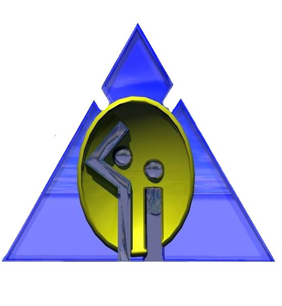
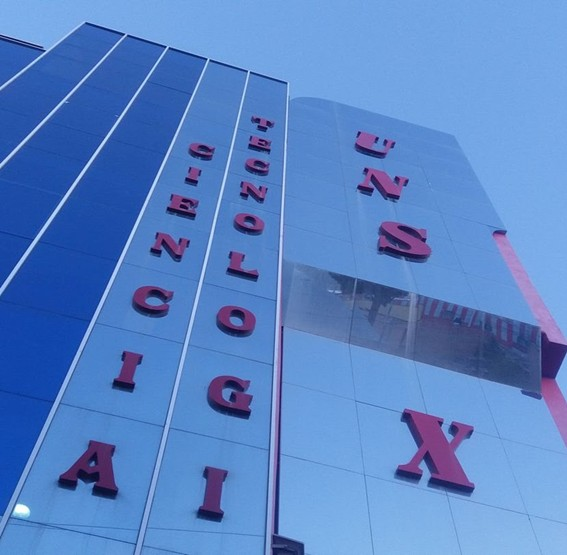
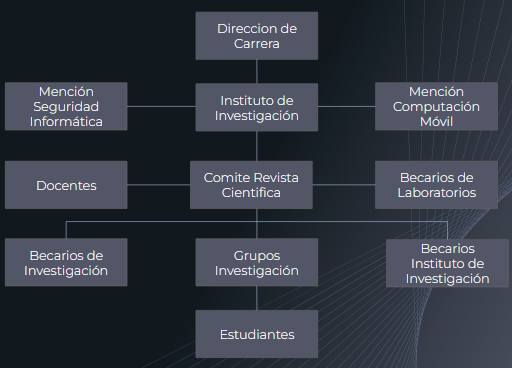

El Instituto de Investigación y Desarrollo de Aplicaciones Informáticas (IIDAI), pertenece a la carrera de Ingeniería Informática de la Universidad Nacional "Siglo XX", y se constituye en un centro de investigación Científica y Tecnológica en el área de la Informática que apoya los procesos de formación investigativa de la carrera buscando contribuir a la sociedad y desarrollar proyectos I+D e I+D+i.
Objetivo: Desarrollo de investigación científica y su publicación Científica
Entre las principales actividades que realiza están:


Oficina Central: Llallagua calle Oruro s/n edificio de Ciencia y Tecnología, primer piso Oficina Nº 1
Oficina Campus Universitario María Barzola: Edificio Administrativo “Bloque A” Ingeniería Informática, Oficina Nº 3
Email: iidai.informatica.unsxx@gmail.com
Teléfono: (+591) - 75418754
Llallagua - Potosi - Bolivia